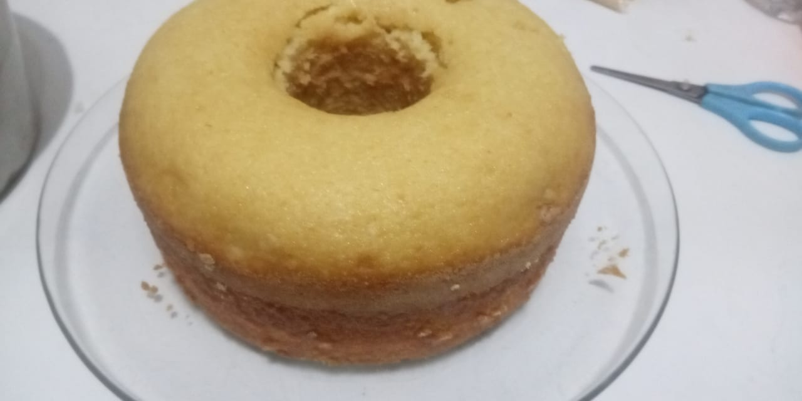

Bolo de fuba vegano

Bolo de fuba vegano sem ovo e sem lactose
Ingredientes
- 1 xícara e 1/2 de farinha de trigo
- 1 xicara de chá de fuba (farinha de milho)
- 1/3 de xícara de óleo vegetal
- 1 xícara e 1/2 de açucar cristal
- 1 colher de fermento
- 1 xícara de leite vegetal
Modo de preparo
- Unte uma forma média com óleo e farinha de milho;
- Pré aqueça o forno a 200 graus;
- Misture todos os ingredientes (menos o fermento) em um bowl até formar uma massa homogênea;
- Após chegar ao ponto, colocar o fermento, misturar até incorporar e parar de mexer;
- Disponha a massa na forma devagar para ficar uniforme e sem bolhas;
- Coloque no forno entre 180-200 graus e deixe até dourar, por aproximadamente 50 minutos;
- Deixe esfriar 15 minutos na forma apos retirar do forno antes de cortar.